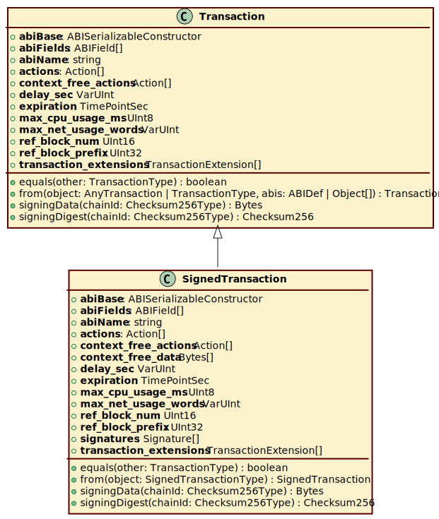

Class SignedTransaction
Hierarchy-Diagram
{kind=link}
Legend
 class
class
 public method
public method
underlined
static property/method
Hierarchy (view full)
- Transaction
- SignedTransaction
Properties
actions
The actions in the transaction.
context_
The context free actions in the transaction.
context_
Context-free action data, for each context-free action, there is an entry here.
delay_
Number of seconds to delay this transaction for during which it may be canceled.
expiration
The time at which a transaction expires.
max_
Upper limit on the total CPU time billed for this transaction.
max_
Upper limit on total network bandwidth (in 8 byte words) billed for this transaction.
ref_
*Specifies a block num in the last 2^16 blocks.
ref_
Specifies the lower 32 bits of the block id.
signatures
List of signatures.
transaction_
Transaction extensions.
Static abi
Static abi
abi
Static abi
abi
Accessors
id
- get id(): Checksum256
Returns Checksum256
transaction
- get transaction(): Transaction
The transaction without the signatures.
Returns Transaction
Static struct
- get structFields(): ABIField[]
Returns ABIField[]
Methods
equals
- equals(other): boolean
Return true if this transaction is equal to given transaction.
Parameters
- other: TransactionType
Returns boolean
signing
- signing
Data(chainId): Bytes Parameters
- chainId: Checksum256Type
Returns Bytes
signing
- signing
Digest(chainId): Checksum256 Parameters
- chainId: Checksum256Type
Returns Checksum256
Static from
- from(object): SignedTransaction
Parameters
- object: SignedTransactionType
Returns SignedTransaction
Interface that should be implemented by ABI serializable objects.